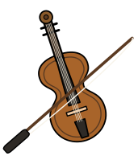

Біографія
Життя Миколи Леонтовича тривало лише 43 роки, але за цей час він пройшов шлях від сільського вчителя співу до композитора світового значення.
Дитинство на Поділлі
Микола Дмитрович Леонтович народився 13 грудня (1 грудня за старим стилем) 1877 року в селі Монастирок на Поділлі, нині Вінницька область, у родині сільського священника. Дитинство майбутнього композитора минуло в простій сільській хаті, серед полів і садів, де з ранку до вечора звучали народні пісні.
Саме тут, слухаючи колядки, щедрівки, веснянки та весільні пісні односельців, хлопчик уперше відчув красу української мелодії, яка згодом стане основою всієї його творчості.


Музична родина
Батько, Дмитро Феофанович, був освіченою і музично обдарованою людиною: грав на скрипці, віолончелі та гітарі, керував хором під час навчання в семінарії. Він і став першим учителем сина – навчив його грати на скрипці та розуміти ноти.
Мати, Марія Йосипівна, мала гарний голос і часто співала дітям народні пісні. Від неї Микола успадкував любов до живого народного співу, а від батька – увагу до музичної грамоти та інструментів.
Сільський учитель і диригент
Після семінарії Леонтович учителював у сільських школах Поділля, зокрема в селі Чукові. Там він організував учнівський хор і невеликий оркестр, а також підготував перші збірки обробок – «Зібрання пісень з Поділля» (1901 і 1903 роки).
У 1904 році композитор переїхав на Донбас, на станцію Гришине, де викладав співи в залізничній школі. Він створив хор і оркестр із робітників-залізничників, з якими виступав на концертах. Через участь у громадському житті під час революційних подій 1905 року він був змушений залишити Донбас.
Тульчинський період
З 1908 року Леонтович жив у Тульчині та викладав музику і спів у жіночому єпархіальному училищі. Ці роки стали найпліднішими у його творчості: саме тут він працював над остаточними редакціями багатьох обробок, серед них – «Щедрик».
Прагнучи вдосконалити свою майстерність, композитор їздив на заняття до відомого теоретика музики Болеслава Яворського, вивчав композицію та поліфонію. Своїх учениць він привчав до точного строю – камертон завжди був у нього під рукою.

Останні роки
У 1918 році Леонтович переїхав до Києва. Він викладав у Музично-драматичному інституті імені Миколи Лисенка та в Народній консерваторії, працював у музичному відділі Міністерства освіти, допомагав створювати нові хорові колективи, писав музику та розпочав роботу над оперою «На русалчин Великдень».
Попри високе становище в музичному житті столиці, композитор залишався простою людиною, яка любила рідне Поділля, сільську природу й українське вбрання.
Під час буремних подій 1919–1920 років композитор кілька разів повертався до Тульчина, де заснував музичну школу. У січні 1921 року він приїхав до батька в село Марківка. У ніч на 23 січня 1921 року Миколу Леонтовича вбив агент ЧК Афанасій Грищенко, який попросився до хати на нічліг. Композитора поховали в Марківці, біля церкви.
Хронологія життя
- Народився в селі Монастирок на Поділлі.
- Навчання в Подільській духовній семінарії в Кам'янці-Подільському.
- Початок учителювання в сільських школах Поділля.
- Виходять збірки обробок «Зібрання пісень з Поділля»; перша редакція «Щедрика».
- Робота вчителем співу на станції Гришине (Донбас).
- Тульчинський період: викладання в єпархіальному училищі.
- Перше публічне виконання «Щедрика» в Києві.
- Переїзд до Києва, викладацька та громадська діяльність.
- Загинув у ніч на 23 січня в селі Марківка.